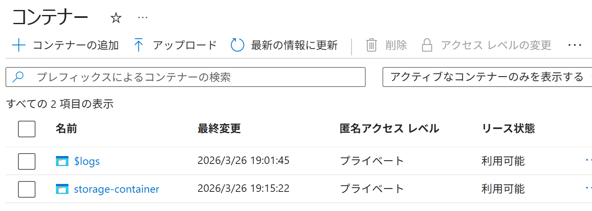

Azure ポータル で コンテナー を作成する
適用対象: ✔️ ストレージ アカウント
この演習では、Azure ポータル を使用して コンテナー を作成します。
所要時間: 約 10 分
先行の演習
この演習を始める前に ストレージ アカウント を作成する を完了してください。
Azure ストレージ

ストレージ サービス
ストレージ サービス は、ストレージ アカウントで利用するデータ保存サービスの総称です。
Azure ポータルのメニューから 個々のストレージ サービスを利用できます。

| ポータルでの メニュー | サービス / 拡張機能 | 概要・主な特徴 |
|---|---|---|
| コンテナー | Blob Storage | 画像やログなどを保存する汎用的なオブジェクト ストレージ（フラットな名前空間） |
| キュー | Queue Storage | アプリケーション間で非同期メッセージをやり取りするためのキューサービス |
| テーブル | Table Storage | 非リレーショナルな構造化データ向け NoSQL データストア |
| ファイル共有 | Azure Files | ファイル共有プロトコル(SMB/NFS)に対応したファイルストレージ |
タスク 1: コンテナーの作成
コンテナー の作成は、内部的には ストレージ アカウント内で Blob Storage サービスを利用する操作です。
- ポータルメニューから [ストレージ アカウント] を選択します。
storagev2msaz1を選択します。- サービスメニューから データ ストレージ ＞ [コンテナー] を選択します。
- [＋ コンテナーの追加] を選択します。
 匿名アクセスレベル：プライベート は 匿名アクセスを許可しません。
匿名アクセスレベル：プライベート は 匿名アクセスを許可しません。
設定 値 名前 storage-container匿名アクセスレベル [プライベート（匿名アクセスはありません）]
ℹ️ このストレージ アカウントで 匿名アクセス が 無効 になっているため、 コンテナーの 匿名アクセス レベル は変更できず、プライベート（匿名アクセス禁止）に固定されています。 - [作成] を選択します。
- 完了を待ちます。
匿名アクセス レベル
| コンテナー | |
|---|---|
| 名称 | 匿名アクセス レベル |
| 役割 | 匿名アクセスをどこまで許可するか |
| 対象範囲 | 設定した 特定のコンテナーのみ （個別の設定） （ストレージアカウントの設定に従う） |
| 匿名アクセス レベル | プライベート ：非公開 |
| コンテナー ：ファイルとファイル一覧を公開 |
|
| BLOB ：ファイルを公開 |
タスク 2: 作成されたリソースの確認
コンテナーが作成されていることを確認します。
- 上部の検索ボックスに
ストレージ アカウントと入力します。 - [ストレージ アカウント] を選択します。
storagev2msaz1を選択します。- サービスメニューから データ ストレージ ＞ [コンテナー] を選択します。
storage-containerが存在することを確認します。
- 匿名アクセス レベル が
プライベートであることを確認します。
匿名アクセス / 匿名アクセス レベル
| ストレージ アカウント | コンテナー | |
|---|---|---|
| 名称 | 匿名アクセス （BLOB 匿名アクセス） |
匿名アクセス レベル |
| 役割 | 匿名アクセスを許可するかどうか | 匿名アクセスをどこまで許可するか |
| 対象範囲 | アカウント内の すべてのコンテナー （大元の設定） （コンテナーの設定よりも優先される） |
設定した 特定のコンテナーのみ （個別の設定） （ストレージアカウントの設定に従う） |
| 匿名アクセス レベル | プライベート ：非公開 |
|
| コンテナー ：ファイルとファイル一覧を公開 |
||
| BLOB ：ファイルを公開 |